Tópico 4: Condições climáticas, Present Simple e Present Continuous; Esportes e Lazer; Gostos e Preferências; Habilidades; Adverbs of Manner; Partes da casa e mobiliário, Verbos modais can e may; Possessive Pronouns
3.1 May I borrow a lamp?
Rosa está sem luz em seu quarto e pede ajuda a Christine, que vai com ela até o basement procurar por uma lâmpada. Acompanhe o diálogo:
Rosa: Carly? You there ?
Carly: Yeah, what’s up?
Rosa: My light bulb isn’t working, can I borrow one?
Carly: I don’t have any here. Check with Christine, she knows where we keep those things...
Rosa: Okay, thanks. (…) Chris?
Christiane: Rosa You scared me
Rosa: I’m sorry. What are you doing?
Christiane: Just checking some e-mails. I got an answer from a newspaper in New York I sent my article to.
Rosa: Did they accept it?
Christiane: I don’t know, I haven’t read it.
Rosa: Maybe you could help me with a light bulb before reading it. Mine is not working.
Christiane: I think we have some in the basement. I’ll help you with them.
Rosa e Christine vão até o basement, um cômodo muito comum em muitas casas americanas. Mas, além deste, há outras acomodações que compõem uma casa e este será o conteúdo do próximo tópico.
3.2 Parts of the house
Uma residência composta por espaços internos e externos. Cada uma destas partes tem uma função específica. Conheça como se denominam alguns destes espaços:
| chimney (chaminé) | roof (telhado) | bedroom (quarto) |
| bathroom (banheiro) | office (escritório) | attic (sótão) |
| garage (garagem) | laundry room (lavanderia) | stairs (escadas) |
| living room (sala de estar) | basement (porão) | porch (varanda) |
| mailbox (caixa de correios) | garden (jardim) | hallway (corredor) |
| path (caminho) | kitchen (cozinha) | balcony (sacada) |
| fence (cerca) | dining room (sala de jantar) |
Além das parts of the house, uma casa também é composta de peças do mobiliário e outros objetos. Veja no tópico a seguir alguns móveis e utensílios que compõem uma residência.
3.3 Furniture and other items
Para enriquecer seu vocabulário, acompanhe, a seguir, alguns furniture and other items de acordo com as partes da casa onde eles são frequentemente encontrados.
Living room
Kitchen
 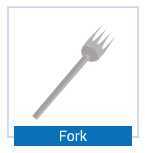
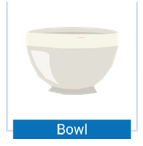
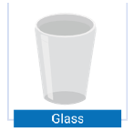
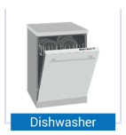
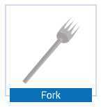
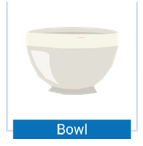
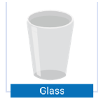
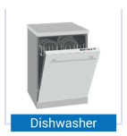

 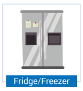
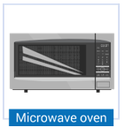
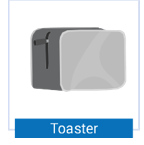
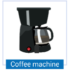
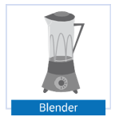
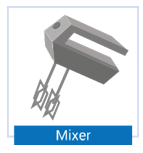
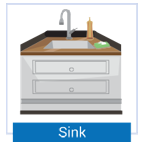
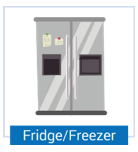
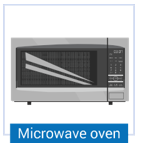
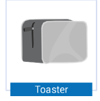
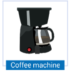
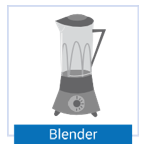
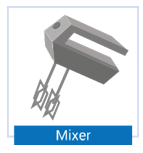
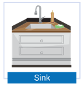
Bathroom

Other items
3.4 Review of There to be
Anteriormente você viu que o verbo There to be é utilizado para expressar existência de pessoas, situações e objetos da mesma forma que, na língua portuguesa, usamos o verbo haver para indicar esse sentido. Em português, muitas pessoas utilizam o verbo ter com o sentido de haver, mas em inglês é errado empregar o verbo To have com esse significado: o verbo To have quer dizer possuir.
A variação que ocorre no verbo There to be é em função daquilo que existe, ou seja, há apenas uma forma para o singular e outra para o plural, dependendo daquilo a que estamos nos referindo. Relembre:
| THERE TO BE (Affirmative) | |
|---|---|
| Singular | Plural |
| There is / There's | There are |
Como There to be possui o verbo To be em sua composição, suas formas negativa e interrogativa seguem as regras de formação desse último. Veja:
| THERE TO BE (Negative) | |
|---|---|
| Singular | Plural |
| There is not | There are not |
| There's not | There aren't |
| There isn't | |
| THERE TO BE (Interrogative) | |
|---|---|
| Singular | Plural |
| Is there? | Are there? |
Assim, quando você quiser descrever sua casa, basta fazer uso de There to be para dizer o que há ou não nela. Veja como Rosa descreve um pouco de sua casa no Brasil:
"My house isn’t very big. There’s a small hall, a living room, a hallway, a kitchen, a toilet and a laundry room, but there isn’t a dining room. We have our meals in the kitchen. Upstairs there are two bedrooms and a bathroom. There isn’t an attic or a basement, these are not very common in Brazil. There’s a small garden at the front and a yard in the back of the house."
Da mesma forma, Rosa descreveu a sala e cozinha de sua casa em um e-mail à sua família, assim que chegou a Chicago. Para isso, também fez uso do verbo There to be:
"In the living room there are two sofas and a coffee table with books and ornaments. There’s a big vase with a beautiful plant on the corner and the TV rack. There’s a print rug on the floor, there are curtains on the windows and cushions on the sofa. In the kitchen, there is a microwave oven, a toaster and a blender, so I can prepare my breakfast. After all, it’s a girls’ house!"
No tópico a seguir, você irá estudar alguns Useful Verbs que lhe auxiliaram nas situações em que você precisar pedir permissão para algo.
3.5 Useful Verbs
Após conseguir resolver o problema com a lâmpada de seu quarto que havia queimado, Rosa teve ainda outro contratempo: seu computador começou a apresentar problemas. Ela então resolveu levá-lo ao departamento de assistência técnica de uma loja em Chicago, mas ao retornar à sua casa, lembrou que precisava terminar um trabalho da faculdade e necessitaria de um computador para fazê-lo. Por sorte os computadores e laptops das housemates de Rosa estavam funcionando e ela só precisou pedir permissão para utilizá-lo. Acompanhe a conversa:
Rosa: Hey, Carly, where are you?
Carly: I’m in my bedroom, come here!
Rosa: Hi, there! Listen, are you using your computer?
Carly: No, not right now. Why?
Rosa: May I use it? Mine had some problem and I took it to a computer store, but I have to finish an essay and I need a computer for that.
Carly: Hmmm…sorry, you may not. I’ll need my computer in some minutes to rehearse some lines. Why don’t you ask Christine? She’s in the living room, maybe you can use hers.
Rosa: No, Chris is using her laptop, so there’s no point in asking her. She’s really busy so she can’t lend it to me.
Carly: Well, let me think… Yes! There’s another laptop on the kitchen table. I think it’s Amanda’s, maybe you can use it.
Rosa: Do you think so? Oh, but first I’ll ask her if I really can. I don’t want to use it without her permission.
Carly: Sure! Just give her a call and ask.
Rosa: OK. Thanks!
Carly: Oh, and by the way, tonight I have an audition for a part on a play, and I’m thinking… May I borrow your blue blouse?
Rosa: Of course you may! There's no problem for me.
Carly: Great! Thanks a lot! It will surely bring me good luck.
Quando se quer pedir permissão para utilizar algum objeto ou equipamento de outra pessoa, é necessário fazer uso de certos verbos. Apresentamos alguns deles a seguir:
Após estudar os Useful Verbs, acompanhe no tópico a seguir como utilizar estes verbos solicitando permissões e/ou favores.
3.6 Modal verbs Can and May - permission
Você viu o modal verb Can expressando habilidade ou capacidade. Mas existe outro sentido para Can.
O modal Can pode ser usado para expressar permissão solicitada, concedida ou negada, bastando para isso variar a sua forma - interrogativa, afirmativa ou negativa - conforme o caso. Em outras palavras, quando se quer pedir permissão para fazer algo ou pegar alguma coisa emprestada, se utiliza a interrogative form de Can. Foi dessa maneira que Rosa pediu uma lâmpada emprestada a Carly.
My light bulb isn’t working, can I borrow one?
Caso Rosa quisesse pedir o computador de Carly utilizando Can, também seria possível. A permissão seria solicitada da seguinte forma:
Can I use it? Mine had some problem.
Para conceder ou negar a permissão, são utilizadas as formas afirmativa e negativa. Verifique:
Can I borrow one?
Yes, you can!
Can I use your computer?
No, you can’t!
No tópico a seguir você verá como utilizar May, Can e outros verbos para comunicar-se de uma maneira cordial.
3.7 Be polite
Apesar de não ser algo obrigatório - quer dizer, não é uma exigência gramatical - quase sempre é utilizado uma espécie de explicação para o porquê de se estar pedindo alguma coisa. Por exemplo, quando Rosa pede o computador de Carly emprestado, ela justifica:
Mine had some problem and I took it to the computer store, but I have to finish an essay and need a computer for that.
O mesmo acontece quando Rosa pede uma lâmpada emprestada, apenas com a diferença de a explicação vir primeiro:
My light bulb isn’t working, can I borrow one?
Da mesma forma, quando se nega um pedido costuma-se justificar o porquê da negação, como no caso de Carly que, ao negar a solicitação de Rosa, diz a ela:
I’ll need my computer in some minutes to rehearse some lines.
É uma questão de politeness dar essa explicação, assim como iniciar a negativa com um pedido de desculpas. Ou seja, se você não quer parecer rude, ao invés de dizer simplesmente No, you can’t, deve dizer Sorry, but no, you can’t seguido da explicação de por que a pessoa não pode fazer aquilo.
Por fim, quando se está dando permissão à pessoa, também é comum utilizarmos outras formas que não o simples Yes, you can. Por exemplo, podemos dizer:
| Sure! | Sure you can. | Of course! |
| Of course you can. | Yes, no problem. | Yes, go ahead. |
Até este momento você estudou o modal Can, que é praticamente intercambiável com May quando se trata de solicitar, conceder ou negar permissão. A diferença é que utilizando May você estará sendo mais formal.
Carly e Rosa dividem a casa há pouco tempo, por isso Carly pede a blusa da amiga de uma maneira mais formal:
May I borrow your blue blouse?
E Rosa lhe responde:
Of course you may! There’s no problem for me.
Em relação à forma, os modal verbs comportam-se todos da mesma maneira no que se refere à afirmativa, negativa e interrogativa. A única diferença em relação a May é que ele não possui uma contraction para a forma negativa: No, you may not.
No próximo tópico você estudará os pronomes objetos.
3.8 Object Pronouns
Os object pronouns são utilizados quando fazemos referência a pessoas ou coisas e elas estão na posição de objeto dentro da frase - o que em inglês se verifica facilmente: elas aparecem após o verbo ou depois de uma preposição. Eles são utilizados quando estamos nos referindo a alguém e essa pessoa não é aquela que realiza a ação, ou seja, ela é o objeto do verbo. Observe:
He needs a book. (He = subject; needs = verb and a book = object)
Rosa is talking to Carly. (Rosa= subject; is talkin to= verb and Carly= object)
Caso queira substituir a book e Carly por object pronouns, teremos as seguintes sentenças:
He needs it. (He = subject; needs = verb and it= object)
Rosa is talking to her. (Rosa= subject; is talkin to = verb and her= object)
Na primeira frase, substituímos o object (the book) pelo object pronoun “it” referente à terceira pessoa do singular quando falamos sobre coisas, lugares e animais.
Na segunda frase, substituímos o object (Carly) - que equivale ao subject pronoun “she” - pelo object pronoun correspondente her.
Assim, é preciso saber quais object pronouns correspondem a quais subject pronouns, veja:
| Subject pronouns | Object pronouns |
|---|---|
| I | Me |
| You | You |
| He | Him |
| She | Her |
| It | It |
| We | Us |
| You | You |
| They | Them |
No diálogo entre Carly e Rosa foram utilizados os pronomes objeto it, me e her nas frases:
May I use it?
She can’t lend it to me.
I’ll ask her.
Isso acontece pelo fato de Rosa estar falando sobre um computador, sobre ela mesma e sobre Christine, respectivamente. Observe as frases a seguir que utilizam os outros object pronouns:
| I like you very much. | Let’s invite him to the party |
| Come with us to the beach! | He’ll call you tomorrow. |
3.9 Possessive Pronouns
Para que você possa entender melhor os possessive pronouns, é necessário retomar os possessive adjectives . Os possessive adjectives, como o próprio nome diz, são adjetivos, e por isso são sempre seguidos de um substantivo. Observe que, ao contrário dos possessive adjectives, os possessive pronouns não são seguidos de substantivo. Veja na tabela:
| This is my book. | This is mine. |
| Where is your pen? | Where is yours? |
| His boots are beautiful. | His are beautiful. |
| Her dress is green. | Hers is green. |
| We like our classes. | We like ours. |
| They read their English books. | They read theirs. |
No quadro a seguir apresentamos a síntese dos possessive adjectives e possessive pronouns:
| Subject | Possessive | Possessive |
|---|---|---|
| I | My | Mine |
| You | Your | Yours |
| He | His | His |
| She | Her | Hers |
| It | Its | |
| We | Our | Ours |
| You | Your | Yours |
| They | Their | Theirs |
Perceba que, com exceção de my, cujo correspondente é mine, a diferença na escrita do possessive pronoun é o acréscimo de um “s” (yours, hers, ours e theirs). Uma vez que his já possui um “s” final, ele não sofre alteração. Por fim, preste atenção que o possessive adjective it não possui o possessive pronoun correspondente.
3.10 Resumo e glossário
Glossary
Light bulb: lâmpada
Scared: assustou
Basement: porão
Find: encontrar
Chimney: chaminé
Roof: telhado
Bedroom: quarto
Bathroom: banheiro
Office: escritório
Attic: sótão
Garage: garagem
Laundry (room): lavanderia; área de serviço
Stairs: escadas
Living room: sala de estar
Porch: varanda
Mailbox: caixa do correio
Garden: jardim
Hallway: corredor
Dining room: sala de jantar
Path: caminho
Kitchen: cozinha
Balcony: sacada
Fence: cerca
Sofa: sofá
Armchair: poltrona
Shelf: estante
Television: televisão
TV rack: rack de TV
Cushion: almofada
Lamp: luminária
Curtains: cortina
Rug: tapete
Picture: quadro
Coffee table: mesa de centro
Fireplace: lareira
Table: mesa
Chair: cadeira
Cupboard: armário
Plate: prato
Cup: xícara
Spoon: colher
Knife: faca
Fork: garfo
Bowl: tigela
Glass: copo
Dishwasher: máquina de lavar louça
Stove: fogão
Oven: forno
Fridge: geladeira
Microwave oven: forno de micro-ondas
Toaster: torradeira
Coffee machine: máquina de café
Blender: liquidificador
Mixer: batedeira
Sink: pia
Shower: chuveiro
Toilet: vaso sanitário
Mirror: espelho
Bathtub: banheira
Bed: cama
Pillow: travesseiro
Blanket: cobertor
Night table: mesa de cabeceira
Wardrobe: armário
Chest of drawers: cômoda
Sheet: lençol
Comforter: edredom
Door: porta
Window: janela
Gate: portão
Took: levei
I’ll need: eu vou precisar
To rehearse some lines: para ensaiar algumas falas
There’s no point in asking her: não adianta pedir para ela
Another: um outro
Without: sem
Just give her a call: apenas ligue para ela
Audition: audição
Part: papel
Play: peça [de teatro]
May I borrow: posso pegar emprestado
Bring: trazer
Good luck: boa sorte
To use: usar
To open: abrir
To close: fechar
To turn on: ligar
To turn off: desligar
To turn up: aumentar (o volume)
To turn down: abaixar (o volume)
To lend: emprestar (ceder por empréstimo)
To borrow: pegar emprestado